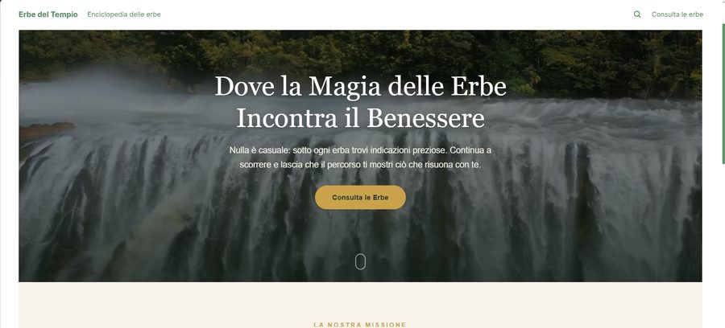
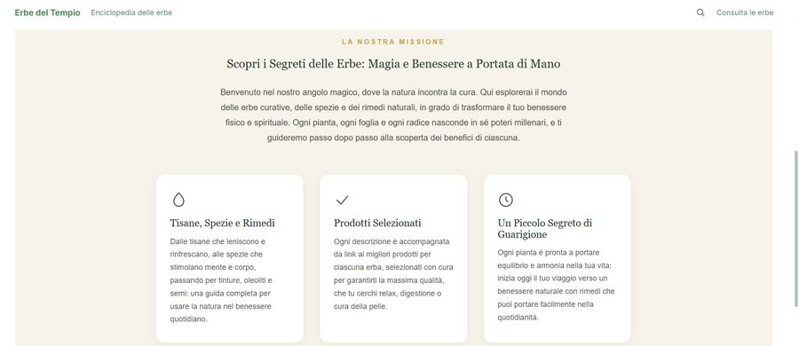
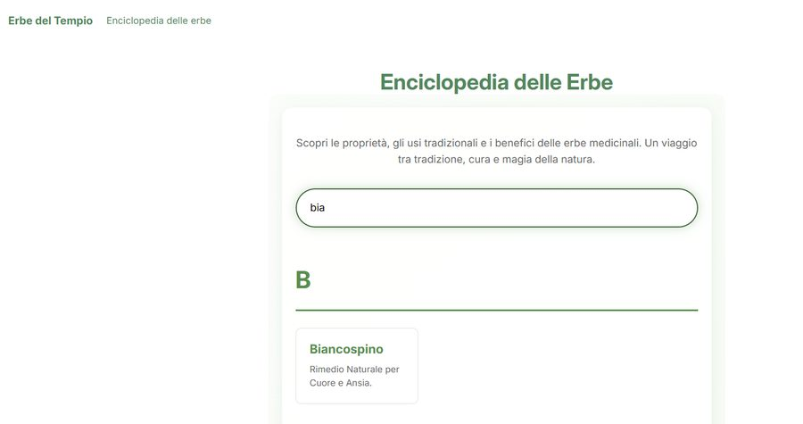
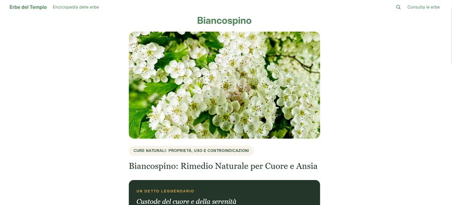
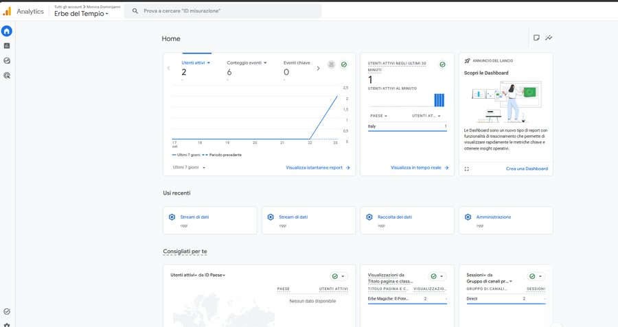

Erbe del Tempio — un e-commerce costruito da zero, dal codice alla visibilità
Un progetto personale in ambito affiliazione (erbe e tisane), che ho usato come banco di prova per portare avanti da sola l'intero percorso di un e-commerce: struttura del sito, codice, SEO e analisi dei dati.
Nota di trasparenza: non è un lavoro commissionato da un cliente, è un progetto che ho ideato e costruito in autonomia — anche per questo lo trovo un esempio onesto di cosa so fare quando gestisco un progetto digitale dall'inizio alla fine, inclusi gli imprevisti.
Cosa ho costruito
Un negozio Shopify con sezioni hero e mission scritte da zero in HTML/CSS personalizzato (custom Liquid), non con template preconfezionati.
Una sezione "Enciclopedia delle Erbe" pensata come contenuto editoriale a supporto del catalogo prodotti, pubblicata in modo incrementale.
Un modello di affiliazione, dove i link ai prodotti rimandano al sito partner che gestisce l'acquisto vero e proprio.

Sezione hero, custom Liquid con video di sfondo

Sezione mission, tre card editoriali

Enciclopedia delle erbe, con ricerca

Scheda di dettaglio di una singola erba
Un esempio di problem solving tecnico
Durante lo sviluppo mi sono imbattuta in un errore di salvataggio nel codice del tema Shopify: un link che avevo modificato non si salvava, perché il file di configurazione è in realtà un JSON che racchiude l'HTML come stringa — e ogni virgoletta al suo interno deve essere "scappata" (\") per non rompere la struttura del file. Ho individuato il punto esatto dell'errore, corretto la sintassi e verificato che il resto del codice restasse coerente con lo stesso stile di escaping. Un dettaglio piccolo, ma rappresentativo di come lavoro: non mi fermo davanti a un errore che non capisco, lo scompongo finché non torna leggibile.
Visibilità e misurazione
Search Console collegata per monitorare l'indicizzazione e la presenza nei risultati di ricerca.
Google Analytics (GA4) collegato tramite l'app Google & YouTube, per leggere il traffico reale del sito.
Tracciamento dei click in uscita verso il sito partner, per capire quali contenuti/prodotti generano più interesse — la vera "conversione" misurabile in un modello di affiliazione.
Attenzione consapevole alle policy di Google: ho scelto di non attivare le schede prodotto gratuite su Google Shopping, perché non compatibili con un modello di affiliazione in cui l'acquisto avviene su un altro dominio.

La proprietà GA4 collegata al sito — appena attivata, ancora con pochissimi dati: la parte che conta qui è che la misurazione è configurata e funzionante.
Perché lo racconto qui
Questo progetto dimostra la parte "esecutiva" di quello che so fare: quando capisco cosa serve, non mi fermo alla teoria — costruisco, misuro, correggo. È il complemento naturale del lavoro di analisi dei processi che faccio con Cartaforbicesasso: lì leggo il processo, qui lo trasformo in qualcosa che funziona davvero online.